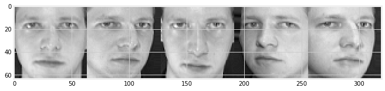
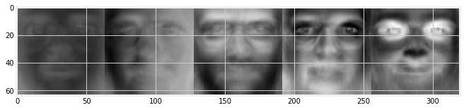
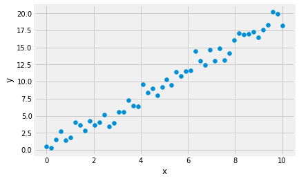
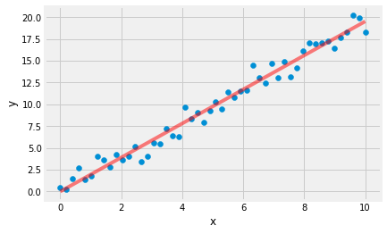
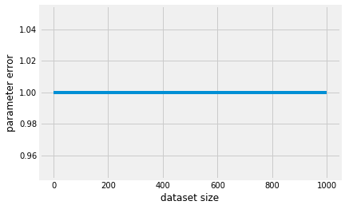

Orthogonal Projections
We will write functions that will implement orthogonal projections.
Learning objectives
- Write code that projects data onto lower-dimensional subspaces.
- Understand the real world applications of projections.
As always, we will first import the packages that we need for this assignment.
1 | # PACKAGE: DO NOT EDIT THIS CELL |
Next, we will retrieve the Olivetti faces dataset.
1 | from sklearn.datasets import fetch_olivetti_faces, fetch_lfw_people |
Advice for testing numerical algorithms
Before we begin this week’s assignment, there are some advice that we would like to give for writing functions that work with numerical data. They are useful for finding bugs in your implementation.
Testing machine learning algorithms (or numerical algorithms in general)
is sometimes really hard as it depends on the dataset
to produce an answer, and you will never be able to test your algorithm on all the datasets
we have in the world. Nevertheless, we have some tips for you to help you identify bugs in
your implementations.
1. Test on small dataset
Test your algorithms on small dataset: datasets of size 1 or 2 sometimes will suffice. This
is useful because you can (if necessary) compute the answers by hand and compare them with
the answers produced by the computer program you wrote. In fact, these small datasets can even have special numbers,
which will allow you to compute the answers by hand easily.
2. Find invariants
Invariants refer to properties of your algorithm and functions that are maintained regardless
of the input. We will highlight this point later in this notebook where you will see functions,
which will check invariants for some of the answers you produce.
Invariants you may want to look for:
- Does your algorithm always produce a positive/negative answer, or a positive definite matrix?
- If the algorithm is iterative, do the intermediate results increase/decrease monotonically?
- Does your solution relate with your input in some interesting way, e.g. orthogonality?
Finding invariants is hard, and sometimes there simply isn’t any invariant. However, DO take advantage of them if you can find them. They are the most powerful checks when you have them.
We can find some invariants for projections. In the cell below, we have written two functions which check for invariants of projections. See the docstrings which explain what each of them does. You should use these functions to test your code.
1 | import numpy.testing as np_test |
1. Orthogonal Projections
Recall that for projection of a vector $\boldsymbol x$ onto a 1-dimensional subspace $U$ with basis vector $\boldsymbol b$ we have
And for the general projection onto an M-dimensional subspace $U$ with basis vectors $\boldsymbol b_1,\dotsc, \boldsymbol b_M$ we have
where
Your task is to implement orthogonal projections. We can split this into two steps
- Find the projection matrix $\boldsymbol P$ that projects any $\boldsymbol x$ onto $U$.
- The projected vector $\pi_U(\boldsymbol x)$ of $\boldsymbol x$ can then be written as $\pi_U(\boldsymbol x) = \boldsymbol P\boldsymbol x$.
To perform step 1, you need to complete the function projection_matrix_1d and projection_matrix_general. To perform step 2, complete project_1d and project_general.
1 | # GRADED FUNCTION: DO NOT EDIT THIS LINE |
We have included some unittest for you to test your implementation.
1 | # Orthogonal projection in 2d |
Remember our discussion earlier about invariants? In the next cell, we will check that these invariants hold for the functions that you have implemented earlier.
1 | # Test 1D |
It is always good practice to create your own test cases. Create some test
cases of your own below!
1 | # Write your own test cases here, use random inputs, utilize the invariants we have! |
2. Eigenfaces (optional)
Next, we will take a look at what happens if we project some dataset consisting of human faces onto some basis we call
the “eigenfaces”. You do not need to know what eigenfaces are for now but you will know what they are towards the end of the course!
As always, let’s import the packages that we need.
1 | from sklearn.datasets import fetch_olivetti_faces, fetch_lfw_people |
Let’s visualize some faces in the dataset.
1 | plt.figure(figsize=(10,10)) |

1 | # for numerical reasons we normalize the dataset |
The data for the basis has been saved in a file named eigenfaces.npy, first we load it into the variable B.
1 | B = np.load('eigenfaces.npy')[:50] # we use the first 50 basis vectors --- you should play around with this. |
the eigenfaces have shape (50, 64, 64)
Each instance in $\boldsymbol B$ is a ‘64x64’ image, an “eigenface”, which we determined using an algorithm called Principal Component Analysis. Let’s visualize
a few of those “eigenfaces”.
1 | plt.figure(figsize=(10,10)) |

Take a look at what happens if we project our faces onto the basis $\boldsymbol B$ spanned by these 50 “eigenfaces”. In order to do this, we need to reshape $\boldsymbol B$ from above, which is of size (50, 64, 64), into the same shape as the matrix representing the basis as we have done earlier, which is of size (4096, 50). Here 4096 is the dimensionality of the data and 50 is the number of data points.
Then we can reuse the functions we implemented earlier to compute the projection matrix and the projection. Complete the code below to visualize the reconstructed faces that lie on the subspace spanned by the “eigenfaces”.
1 | # EDIT THIS FUNCTION |
What would happen to the reconstruction as we increase the dimension of our basis?
Modify the code above to visualize it.
3. Least squares regression (optional)
Consider the case where we have a linear model for predicting housing prices. We are predicting the housing prices based on features in the
housing dataset. If we denote the features as $\boldsymbol x_0, \dotsc, \boldsymbol x_n$ and collect them into a vector $\boldsymbol {x}$, and the price of the houses as $y$. Assuming that we have
a prediction model in the way such that $\hat{y}_i = f(\boldsymbol {x}_i) = \boldsymbol \theta^T\boldsymbol {x}_{i}$.
If we collect the dataset into a $(N,D)$ data matrix $\boldsymbol X$, we can write down our model like this:
i.e.,
Note that the data points are the rows of the data matrix, i.e., every column is a dimension of the data.
Our goal is to find the best $\boldsymbol\theta$ such that we minimize the following objective (least square).
If we set the gradient of the above objective to $\boldsymbol 0$, we have
The solution that gives zero gradient solves (which we call the maximum likelihood estimator) the following equation:
_This is exactly the same as the normal equation we have for projections_.
This means that if we solve for $\boldsymbol X^T\boldsymbol X\boldsymbol \theta = \boldsymbol X^T\boldsymbol y.$ we would find the best $\boldsymbol \theta = (\boldsymbol X^T\boldsymbol X)^{-1}\boldsymbol X^T\boldsymbol y$, i.e. the $\boldsymbol \theta$ which minimizes our objective.
Let’s put things into perspective. Consider that we want to predict the true coefficient $\boldsymbol \theta$
of the line $\boldsymbol y = \boldsymbol \theta^T \boldsymbol x$ given only $\boldsymbol X$ and $\boldsymbol y$. We do not know the true value of $\boldsymbol \theta$.
Note: In this particular example, $\boldsymbol \theta$ is a number. Still, we can represent it as an $\mathbb{R}^1$ vector.
1 | x = np.linspace(0, 10, num=50) |

1 | X = x.reshape(-1,1) # size N x 1 |
We can show how our $\hat{\boldsymbol \theta}$ fits the line.
1 | fig, ax = plt.subplots() |
theta = 2.000000
theta_hat = 1.951585

What would happend to $\lVert \hat{\boldsymbol \theta} - \boldsymbol \theta \rVert$ if we increase the number of datapoints?
Make your hypothesis, and write a small program to confirm it!
1 | N = np.arange(2, 10000, step=10) |
